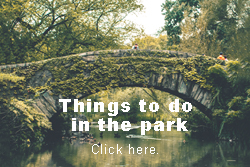

Manhattan might be best known for its towering skyscrapers and bustling pavement, but there are few New York City locales more loved than the 843 acres of green that is Central Park. Stretching from Midtown to Harlem, the park is a year-round natural oasis for locals and visitors alike. With the city’s population ballooning in the mid-19th century, the New York State Legislature set aside a large swath of land to create a much-needed public park. After winning a design contest in 1858, landscape architects Frederick Law Olmsted and Calvert Vaux were tasked with bringing to life what Olmsted called “the lungs of the city.” The park has changed and evolved over the century and a half since then to become what it is today: a diverse public space encompassing forest paths, ponds and fountains, performance spaces and long, dreamy stretches of green. And the latest change came in June 2018 when the park became automobile-free.
With the city’s population ballooning in the mid-19th century, the New York State Legislature set aside a large swath of land to create a much-needed public park. After winning a design contest in 1858, landscape architects Frederick Law Olmsted and Calvert Vaux were tasked with bringing to life what Olmsted called “the lungs of the city.” The park has changed and evolved over the century and a half since then to become what it is today: a diverse public space encompassing forest paths, ponds and fountains, performance spaces and long, dreamy stretches of green. And the latest change came in June 2018 when the park became automobile-free.